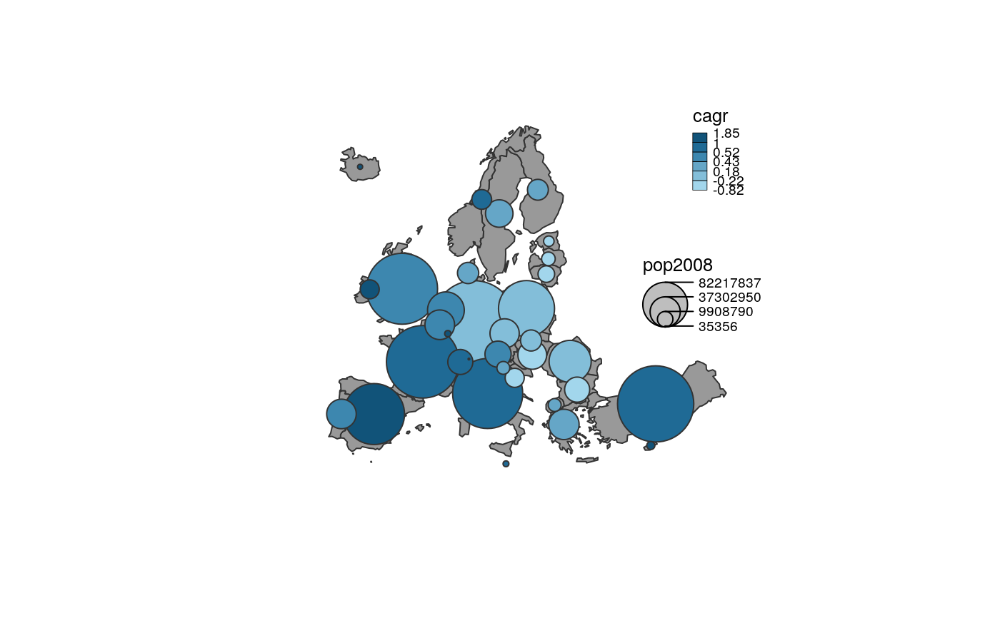

R/propSymbolsChoroLayer.R
propSymbolsChoroLayer.RdPlot a proportional symbols layer with colors based on a quantitative data classification
propSymbolsChoroLayer( x, spdf, df, spdfid = NULL, dfid = NULL, var, inches = 0.3, fixmax = NULL, symbols = "circle", border = "grey20", lwd = 1, var2, breaks = NULL, method = "quantile", nclass = NULL, col = NULL, colNA = "white", legend.title.cex = 0.8, legend.values.cex = 0.6, legend.var.pos = "right", legend.var.title.txt = var, legend.var.values.rnd = 0, legend.var.style = "c", legend.var.frame = FALSE, legend.var2.pos = "topright", legend.var2.title.txt = var2, legend.var2.values.rnd = 2, legend.var2.nodata = "no data", legend.var2.frame = FALSE, legend.var2.border = "black", legend.var2.horiz = FALSE, add = TRUE )
| x | an sf object, a simple feature collection. If x is used then spdf, df, spdfid and dfid are not. |
|---|---|
| spdf | SpatialPointsDataFrame or SpatialPolygonsDataFrame; if spdf is a SpatialPolygonsDataFrame symbols are plotted on centroids. |
| df | a data frame that contains the values to plot. If df is missing spdf@data is used instead. |
| spdfid | name of the identifier variable in spdf, default to the first column of the spdf data frame. (optional) |
| dfid | name of the identifier variable in df, default to the first column of df. (optional) |
| var | name of the numeric variable used to plot the symbols sizes. |
| inches | size of the biggest symbol (radius for circles, width for squares, height for bars) in inches. |
| fixmax | value of the biggest symbol (see propSymbolsLayer Details). |
| symbols | type of symbols, one of "circle", "square" or "bar". |
| border | color of symbols borders. |
| lwd | width of symbols borders. |
| var2 | name of the numeric variable used to plot the symbols colors. |
| breaks | break points in sorted order to indicate the intervals for assigning the colors. Note that if there are nlevel colors (classes) there should be (nlevel+1) breakpoints (see choroLayer Details). |
| method | a classification method; one of "sd", "equal", "quantile", "fisher-jenks", "q6" or "geom" (see choroLayer Details). |
| nclass | a targeted number of classes. If null, the number of class is automatically defined (see choroLayer Details). |
| col | a vector of colors. Note that if breaks is specified there must be one less colors specified than the number of break. |
| colNA | no data color. |
| legend.title.cex | size of the legend title. |
| legend.values.cex | size of the values in the legend. |
| legend.var.pos | position of the legend, one of "topleft", "top", "topright", "right", "bottomright", "bottom", "bottomleft", "left" or a vector of two coordinates in map units (c(x, y)). If legend.var.pos is "n" then the legend is not plotted. |
| legend.var.title.txt | title of the legend (proportional symbols). |
| legend.var.values.rnd | number of decimal places of the values in the legend. |
| legend.var.style | either "c" or "e". The legend has two display styles. |
| legend.var.frame | whether to add a frame to the legend (TRUE) or not (FALSE). |
| legend.var2.pos | position of the legend, one of "topleft", "top", "topright", "right", "bottomright", "bottom", "bottomleft", "left" or a vector of two coordinates in map units (c(x, y)). If legend.var2.pos is "n" then the legend is not plotted. |
| legend.var2.title.txt | title of the legend (colors). |
| legend.var2.values.rnd | number of decimal places of the values in the legend. |
| legend.var2.nodata | text for "no data" values |
| legend.var2.frame | whether to add a frame to the legend (TRUE) or not (FALSE). |
| legend.var2.border | color of boxes borders in the legend. |
| legend.var2.horiz | whether to display the legend horizontally (TRUE) or not (FALSE). |
| add | whether to add the layer to an existing plot (TRUE) or not (FALSE). |
legendBarsSymbols, legendChoro, legendCirclesSymbols, legendSquaresSymbols, choroLayer, propSymbolsLayer
#> Reading layer `mtq' from data source `/tmp/Rtmp93HW5u/temp_libpathf3935a202e2/cartography/gpkg/mtq.gpkg' using driver `GPKG' #> Simple feature collection with 34 features and 7 fields #> geometry type: MULTIPOLYGON #> dimension: XY #> bbox: xmin: 690574 ymin: 1592536 xmax: 735940.2 ymax: 1645660 #> CRS: 32620propSymbolsChoroLayer(x = mtq, var = "POP", var2 = "MED", col = carto.pal(pal1 = "blue.pal", n1 = 3, pal2 = "red.pal", n2 = 3), inches = 0.2, method = "q6", border = "grey50", lwd = 1, legend.var.pos = "topright", legend.var2.pos = "left", legend.var2.values.rnd = -2, legend.var2.title.txt = "Median Income\n(in euros)", legend.var.title.txt = "Total Population", legend.var.style = "e")